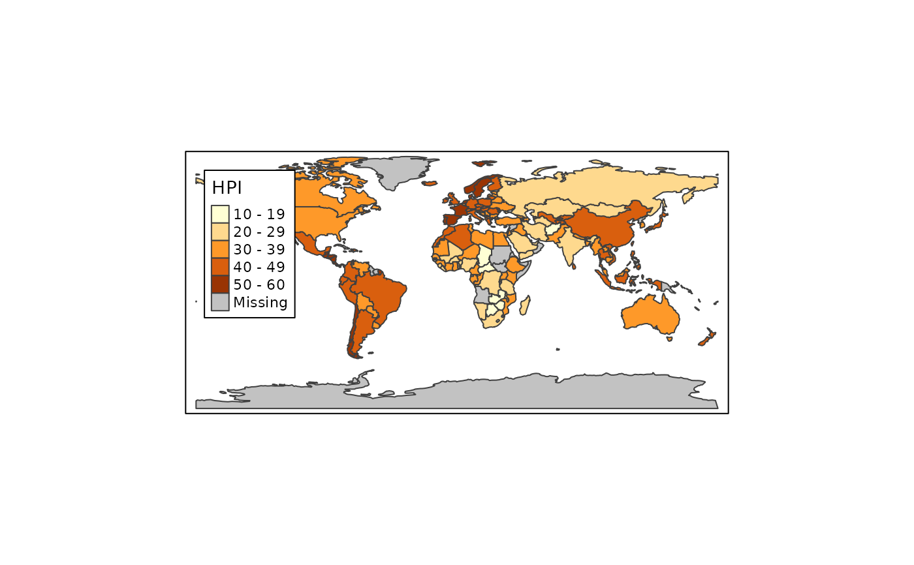
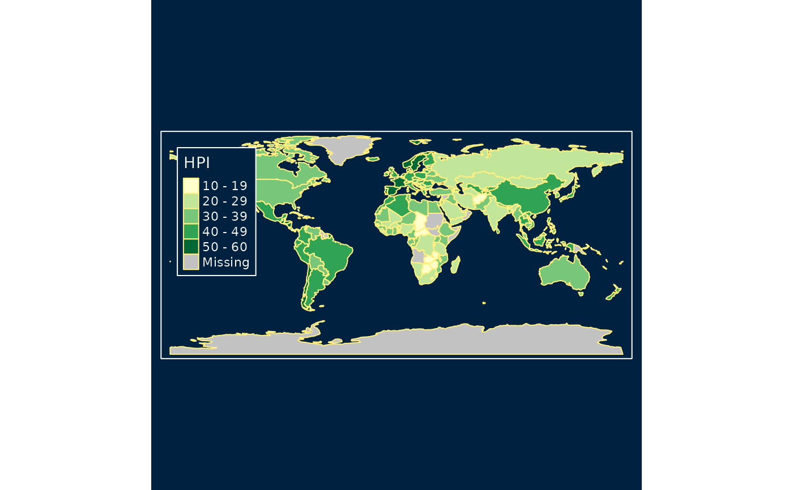
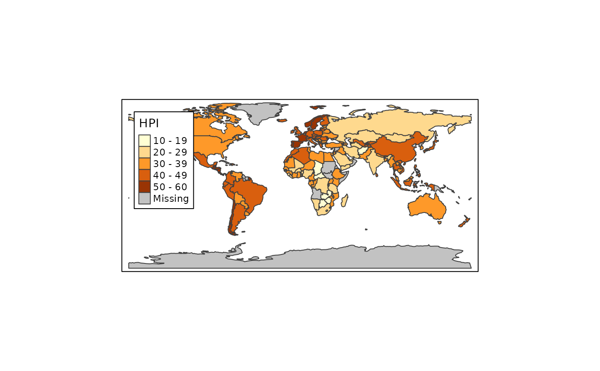
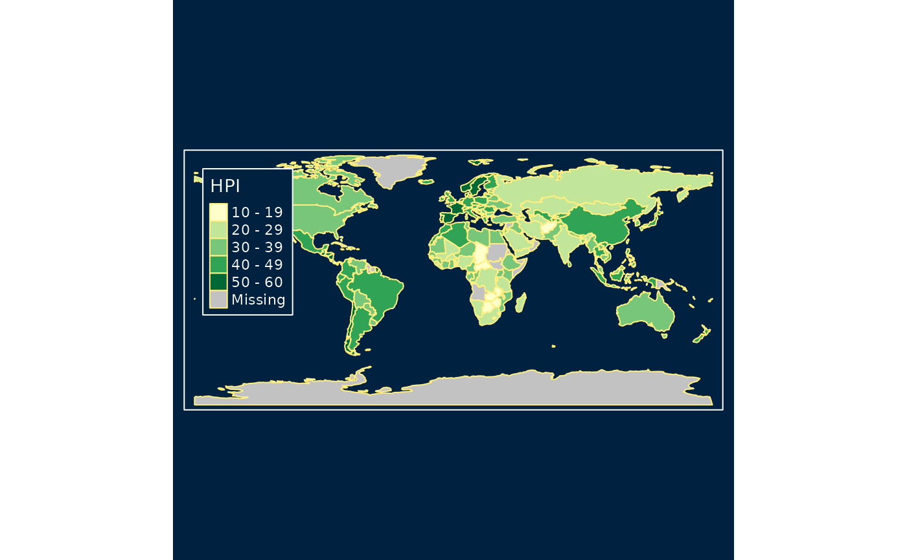

Set or get the default tmap style. Without arguments, the current style is returned.
Also the available styles are displayed. When a style is set, the corresponding tmap
options (see tmap_options()) will be set accordingly.
The default style (i.e. when loading the package) is "white".
Arguments
- style
Name of the style. When omitted,
tmap_style()returns the current style and also shows all available styles. When the style is specified,tmap_style()sets the style accordingly. Note that in that case, all tmap options (seetmap_options()) will be reset according to the style definition. Seetm_layout()for predefined styles, andtmap_style_catalogue()for creating a catalogue.
Details
Note that tm_style() is used within a plot call (so it only affects that plot),
whereas tmap_style() sets the style globally.
After loading a style, the options that defined this style
(i.e. the difference with the default "white" style) can be obtained by tmap_options_diff().
The documentation of tmap_options() (details and the examples) shows how to create a new style.
See also
tmap_options()for tmap optionstmap_style_catalogue()to create a style catalogue of all available styles.
Examples
tmap_style()
#> current tmap style is "white" (tmap default)
#> other available styles are: "gray", "natural", "cobalt", "albatross", "beaver", "bw", "classic", "watercolor", "fancy"
#> tmap v3 styles: "v3" (tmap v3 default), "gray_v3", "natural_v3", "cobalt_v3", "albatross_v3", "beaver_v3", "bw_v3", "classic_v3", "watercolor_v3"
tm_shape(World) + tm_polygons("HPI")
 tmap_style("cobalt")
#> style set to "cobalt"
#> other available styles are: "white" (tmap default), "gray", "natural", "albatross", "beaver", "bw", "classic", "watercolor", "fancy"
#> tmap v3 styles: "v3" (tmap v3 default), "gray_v3", "natural_v3", "cobalt_v3", "albatross_v3", "beaver_v3", "bw_v3", "classic_v3", "watercolor_v3"
tm_shape(World) + tm_polygons("HPI")
tmap_style("cobalt")
#> style set to "cobalt"
#> other available styles are: "white" (tmap default), "gray", "natural", "albatross", "beaver", "bw", "classic", "watercolor", "fancy"
#> tmap v3 styles: "v3" (tmap v3 default), "gray_v3", "natural_v3", "cobalt_v3", "albatross_v3", "beaver_v3", "bw_v3", "classic_v3", "watercolor_v3"
tm_shape(World) + tm_polygons("HPI")
 # for backwards compatibility, the styles of tmap versions 1-3 are also included:
tmap_style("v3")
#> style set to "v3" (tmap v3 default)
#> other available styles are: "white" (tmap default), "gray", "natural", "cobalt", "albatross", "beaver", "bw", "classic", "watercolor", "fancy"
#> tmap v3 styles: "gray_v3", "natural_v3", "cobalt_v3", "albatross_v3", "beaver_v3", "bw_v3", "classic_v3", "watercolor_v3"
tm_shape(World) + tm_polygons("HPI")

tmap_style("cobalt_v3")
#> style set to "cobalt_v3"
#> other available styles are: "white" (tmap default), "gray", "natural", "cobalt", "albatross", "beaver", "bw", "classic", "watercolor", "fancy"
#> tmap v3 styles: "v3" (tmap v3 default), "gray_v3", "natural_v3", "albatross_v3", "beaver_v3", "bw_v3", "classic_v3", "watercolor_v3"
tm_shape(World) + tm_polygons("HPI")

# for backwards compatibility, the styles of tmap versions 1-3 are also included:
tmap_style("v3")
#> style set to "v3" (tmap v3 default)
#> other available styles are: "white" (tmap default), "gray", "natural", "cobalt", "albatross", "beaver", "bw", "classic", "watercolor", "fancy"
#> tmap v3 styles: "gray_v3", "natural_v3", "cobalt_v3", "albatross_v3", "beaver_v3", "bw_v3", "classic_v3", "watercolor_v3"
tm_shape(World) + tm_polygons("HPI")

tmap_style("cobalt_v3")
#> style set to "cobalt_v3"
#> other available styles are: "white" (tmap default), "gray", "natural", "cobalt", "albatross", "beaver", "bw", "classic", "watercolor", "fancy"
#> tmap v3 styles: "v3" (tmap v3 default), "gray_v3", "natural_v3", "albatross_v3", "beaver_v3", "bw_v3", "classic_v3", "watercolor_v3"
tm_shape(World) + tm_polygons("HPI")
